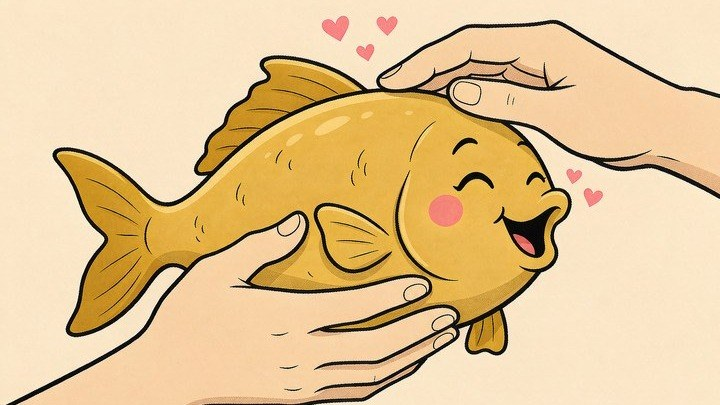

今日已赚
在岗
退出

¥
0.000
白嫖
¥0.00
已摸
0m
每秒进账
¥0.0136
时薪
¥49.04
日薪
¥367.82
已工作
00:00:00
0%
距下班
09:00:00
本月已赚
¥0.00
还剩
0
天
本月
¥0.00
今日白干
¥0.00
不计入月薪
打卡成功，先稳住
摸鱼也是在岗，钱照走
我在加班
结束加班
已赚 ≈
奶茶
0.0 杯
目标
1,000
杯
距下班还能买
0.0 杯
今日目标
12
杯
◎
今天休息
未计薪。休息日打开它也不会虚增金额。